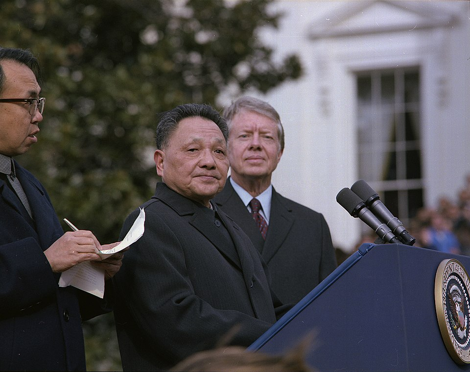
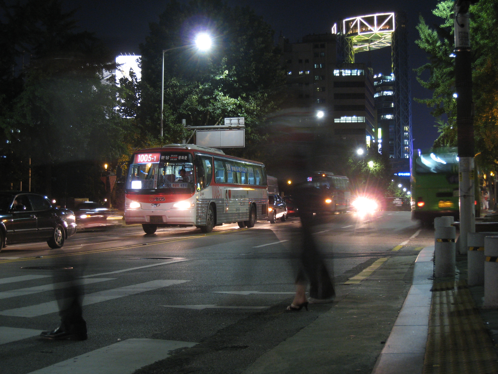

1.4 Economic Systems: Case Studies from Command to Market
- Capitalism spread because price signals automatically coordinate supply and demand in ways no planning office can replicate. Command economies producing the wrong things in the wrong quantities could not compete.
- Transitioning to capitalism requires privatization (moving state property to private owners), adjusting to new incentives, and surviving short-term economic pain before long-term gains arrive.
- The Soviet Union collapsed in 1991 after decades of command-economy failures. Russia's 1990s transition was chaotic and painful; politically connected insiders captured much of the privatized wealth.
- China kept Communist Party political control but introduced market reforms starting in 1978, producing the fastest sustained economic growth in history and lifting nearly a billion people out of poverty.
- Eastern Europe transitioned rapidly after 1989 and most former Soviet bloc countries joined the European Union by 2007.
- Capitalism looks different everywhere: South Korea used export-led growth, Singapore used targeted government investment, Sweden uses high taxes to fund a generous welfare state, Japan guides industry through government-business partnerships.
- Every real economy is mixed. The ongoing debate is not whether to have some government involvement, but how much.
Tap a term for its definition.
-
Definition: A country in the process of shifting from a command or socialist economic system to a market economy.
-
Definition: The transfer of state-owned factories, farms, or other property to private ownership; a key step in transitioning to capitalism.
-
Definition: A government-issued certificate given to citizens during privatization that can be exchanged for ownership shares in formerly state-owned companies.
-
Definition: A comprehensive, centralized government economic plan that sets production targets for all industries over a five-year period; used in the Soviet Union and Maoist China.
-
Definition: The forced transfer of privately owned farms and businesses to common state ownership; a defining feature of Soviet and Maoist economic policy.
-
Definition: Russian for 'restructuring'; Mikhail Gorbachev's 1985 attempt to reform the Soviet economy by giving managers more freedom and encouraging small businesses.
-
Definition: Gross domestic product divided by the total population; used to compare average income and output levels across countries.
-
Definition: An association of European nations formed in 1993 to create a single market with free movement of goods, services, people, and capital across member borders.
-
Definition: A Japanese business structure in which a tightly knit group of firms share an external board of directors that shields member companies from competition.
-
Definition: A production method that uses relatively large amounts of machinery and equipment compared to the number of workers.
The dominant economic story of the past century is a global shift from command and socialist economies toward capitalism and market systems. It has not been smooth or uniform — countries moved at different speeds, held onto different pieces of their old systems, and arrived at very different versions of capitalism.
Why Capitalism?
Simply put: capitalism has proven to be the most powerful engine for generating wealth the world has ever seen. Countries as culturally different as Germany, Japan, Singapore, South Korea, and the United States have all used market systems to dramatically raise their standards of living in a relatively short time. The collapse of the Soviet Union in 1991, covered in detail in section 3 below, was the clearest signal that central planning cannot efficiently run a complex modern economy.
The reason capitalism works so well at generating wealth comes down to prices. When buyers and sellers interact freely, prices carry information. A rising price signals that something is becoming scarce, and producers respond by making more of it without any government instruction. A falling price signals a surplus, and production slows. The Soviet Union was trying to set prices for roughly 25 million distinct products in the 1980s — no planning office can gather and act on what prices communicate automatically — producing chronic shortages of some goods and mountains of others nobody wanted.
The Problems of Transition
Even when a country decides to move toward capitalism, getting there is hard. Economists use the term transition economy for a country in the process of shifting from a command or socialist system to a market economy. The transition involves much more than writing new laws, it requires changing how millions of people think about work, ownership, and incentives.
Privatization
One of the first steps is privatization: the transfer of state-owned factories, farms, and other property to private ownership. This matters because capitalism requires private property, entrepreneurs need to own the results of their risk-taking. In Poland, Hungary, and the Czech Republic, this was done using vouchers: government-issued certificates given to citizens that could be exchanged for ownership shares in companies being sold off. In some countries this worked well; in others, politically connected insiders grabbed most of the vouchers and simply traded political power for economic power, so the old ruling group became the new ruling group.
Responding to new incentives
Workers and managers in command economies are trained to follow orders and fill quotas. A market economy requires a completely different mindset: making independent decisions, interpreting prices, taking initiative, and accepting that poor performance means losing a business or a job. A factory manager who spent a career hitting state-assigned output targets suddenly needs to borrow money from a bank, pay it back with interest, satisfy customers, and beat competitors, or shut down.
Underestimating the costs
Countries eager for capitalism's benefits sometimes underestimate its costs. Early capitalism can be harsh: prices spike when price controls are removed, companies fail when subsidies stop, and unemployment surges. The United States went through its own painful version of this during the Great Depression of the 1930s, which led to the creation of unemployment insurance, Social Security, and bank deposit insurance. Countries making a rapid transition from command to market economies face those same growing pains without the safety nets that older capitalist countries built up gradually over decades.
Russia, Soviet Collapse and a Painful Transition
The Soviet era
For most of the 20th century, the Soviet Union ran its economy through centralized Five-Year Plans: comprehensive government blueprints that set production targets for every industry across a country spanning 11 time zones. The central planning authority, called the Gosplan, assigned quotas to farms and factories and tried to coordinate the entire Soviet economy from Moscow. In the early decades this approach had visible results, the Soviet Union went from a rural farming society in 1910 to an industrial power capable of matching the United States militarily by the 1950s.
But the same centralized system that could rapidly industrialize an economy could not efficiently run a complex modern one. Collectivization, the forced common ownership of farms under state control, produced recurring agricultural failures. By the 1980s, shortages were widespread, workers were often unpaid, and the gap between Soviet and Western living standards was impossible to hide from Soviet citizens who could now see Western television.
Gorbachev's reforms and the collapse
In 1985, Soviet leader Mikhail Gorbachev tried to save the system through two reforms. Perestroika, Russian for "restructuring", gave factory managers more freedom and encouraged small private businesses. Glasnost, meaning "openness," allowed more freedom of speech and press. Neither reform was sufficient. They exposed how broken the system was without repairing it. By 1989, the Berlin Wall, the concrete barrier separating market West Germany from command East Germany, had fallen. Citizens physically tore it down. By 1991, the Soviet Union had ceased to exist, splitting into 15 independent countries.

East and West Berliners meet at the Brandenburg Gate on November 10, 1989, the day after the Berlin Wall opened. The fall of the wall marked the beginning of the end for command economies across Eastern Europe and the Soviet Union. Bundesarchiv / Bild 183-1989-1110-018, 1989. CC BY-SA 3.0 DE.
Russia after the Soviet Union
President Boris Yeltsin moved aggressively toward capitalism in the 1990s, distributing vouchers so citizens could buy shares in privatized companies and opening a stock market. The transition was brutal: Russia's per capita GDP, total economic output divided by population, fell an estimated 40 percent during the 1990s. Inflation wiped out savings. A small group of politically connected businesspeople, who became known as "oligarchs", grabbed enormous portions of the privatized economy. By the early 2000s, President Vladimir Putin began re-taking control of key energy and mineral industries.
China, A Managed Transition

Deng Xiaoping arrives at the White House in 1979 for meetings with President Jimmy Carter, one year after launching his landmark economic reforms. Deng's gradual opening of China's economy produced the fastest sustained growth in recorded history. National Archives and Records Administration (NARA). Public domain.
China became a communist economy in 1949 when the Communist Party, under Mao Zedong, took control of the country. In 1958, Mao launched the Great Leap Forward, an ambitious plan to revolutionize industrial and agricultural production almost overnight. Farmers were forced off their land onto massive state-owned communal farms. The plan was a disaster: the agricultural experiment failed, and tens of millions of people died in the resulting famine, one of the deadliest in history.
By the late 1970s, after Mao's death, China's leaders decided to abandon the Soviet model. The reformer who took charge was Deng Xiaoping. Starting in 1978, Deng introduced market reforms gradually, not by giving up political control, but by allowing markets to operate alongside the state.
- Farmers were permitted to sell surplus crops on open markets after meeting state quotas.
- Foreign companies were invited to invest in special economic zones along China's coast.
- Private businesses were gradually legalized.
- State-owned enterprises were required to compete rather than simply receive government subsidies.
The results were extraordinary. China's economy grew at roughly 10 percent per year for three decades, the fastest sustained growth in recorded history. In 1980, approximately 88 percent of China's population lived in extreme poverty (under $2.15 per day). By 2015, that share had fallen below 1 percent. Close to a billion people were lifted out of poverty within a single generation.
China's economy today is often called a socialist market economy: market forces drive most production and pricing decisions in the private sector, while the Communist Party retains political control and the state owns key industries like banking, energy, and telecommunications. Many prices are still regulated. It is firmly a mixed economy, with a combination of market and state control found nowhere else in the world.
Eastern Europe, A Faster Break
The nations of Eastern Europe, many of which had been forced into the Soviet bloc after World War II, were eager to shed communism and moved faster and more completely than Russia. Starting with Poland's Solidarity movement in the 1980s and spreading rapidly after 1989, Hungary, the Czech Republic, and others joined the European Union (EU) between 2004 and 2007. Countries that were command economies in 1989 were market-oriented EU members within 20 years.
Different Faces of Capitalism
Capitalism does not look the same everywhere. Countries bring their own histories, cultures, and political choices to the same basic system and arrive at very different results.
South Korea, export-led growth
In the mid-1950s, after the Korean War, South Korea was one of the poorest countries in Asia. The government opened its markets to international trade and focused on building competitive export industries, starting with low-tech goods like toys and textiles, then moving into steel, shipbuilding, electronics, and automobiles as workers gained skills and capital accumulated. Today South Korea is a high-income country and a major global producer of semiconductors, cars, and consumer electronics.

Seoul, South Korea, one of the world's great economic success stories. In the 1950s, South Korea was one of Asia's poorest countries. Its commitment to open markets and export-led growth transformed it into a high-income economy within two generations. CC BY 2.0.
Singapore, small but rich
Singapore is a city-state roughly 3.5 times the size of Washington, D.C. Despite its tiny size, its per capita GDP is among the highest in the world, about 20 percent higher than that of the United States. Singapore built this wealth through extremely open markets, strict rule of law, low corruption, and targeted government investment in specific high-growth industries: telecommunications, biotechnology, and financial services. The government owns most of Singapore's land and runs the housing system where 80 percent of citizens live, making it a market economy with significant state involvement in key areas.
Sweden, high taxes, high benefits
Sweden was once known as the "socialist state that works", a private market economy combined with one of the most generous welfare systems in the world: universal health care, free university education, extensive parental leave, and strong unemployment benefits. Paying for all of this required very high taxes, top rates once reached 80 percent. Eventually the costs became unsustainable, taxes were cut, and many government programs were privatized. Today Sweden is a mixed market economy with a per capita GDP roughly three-quarters that of the United States.
Japan, government and markets together
Japan's economy is built on markets and private ownership, but the government has historically played an unusually active role in steering private industry toward promising export markets and providing subsidies to targeted sectors. Japan was the economic success story of the 1980s. In the 1990s, growth stalled, partly due to the keiretsu: tightly knit groups of firms governed by a shared board that shields member companies from competition. Protecting companies from competitive pressure reduces the incentive to innovate and improve.
Where This Leaves the Debate
The global shift toward capitalism and market economies is still unfinished. China has liberalized its economy enormously while keeping political control. Russia moved toward markets and then partially reversed course. No country has found the perfect formula. The South Korea, Singapore, Sweden, and Japan examples above show just how different "capitalism" can look while still being called that — and that debate sits at the center of democratic politics in every country, including the United States.
Quick recap before the quiz
- Capitalism spread because it is the most effective known system for generating wealth, through price signals, competition, and private ownership.
- Transitioning to capitalism is difficult: it requires privatization, adjusting to new incentives, and weathering short-term pain before long-term gains arrive.
- The Soviet Union used Five-Year Plans and collectivization, then collapsed in 1991 after decades of command-economy failures. Russia's transition was painful and politically complicated.
- China took a slower, managed path, keeping Communist Party political control while introducing market reforms starting in 1978. The result was the fastest sustained economic growth in history and a near-elimination of extreme poverty.
- Capitalism looks different everywhere. South Korea used export-led growth, Singapore used targeted investment, Sweden built a high-tax welfare state, Japan guided industry through government partnerships, all are market economies, all arrived at very different results. There is no single "correct" version.
These videos will help you review Economic Systems: Case Studies from Command to Market and solidify key concepts before your exam.
- Market prices guarantee that every citizen receives an equal share of goods.
- Market prices are always lower than planned prices.
- Market prices automatically carry and transmit information about scarcity and abundance without any central authority.
- Market prices eliminate the need for competition between producers.
- Private companies always charge lower prices than state companies.
- Capitalism requires that individuals be able to own property and keep the results of their risk-taking.
- Governments are legally prohibited from owning any property in a market economy.
- Privatized companies never go bankrupt.
- Exchanging for ownership shares in companies being sold off by the state
- Purchasing imported consumer goods at discounted prices
- Paying taxes under the new capitalist government
- Trading with neighboring countries for food supplies
- Soviet workers were unwilling to work under any system
- The Soviet Union had too few natural resources to support an industrial economy
- No planning office could gather and process the information that millions of market prices communicate automatically
- Five-Year Plans were too short, ten-year plans would have worked
- A military buildup that temporarily restored Soviet power
- An attempt to restructure the Soviet economy by giving managers more freedom, which exposed the system's deep problems without fixing them
- A currency reform that stopped inflation
- A successful transition to a full market economy that saved the Soviet Union
- A gradual introduction of market mechanisms while the Communist Party kept political control
- A rapid, complete switch from a command economy to a pure market economy
- An adoption of the Soviet Five-Year Plan model with minor adjustments
- A return to Mao's Great Leap Forward approach with updated technology
- It succeeded ahead of schedule and made China an industrial power by 1965
- It worked in cities but failed in rural areas
- It was cancelled before it started due to Soviet opposition
- The agricultural experiment failed catastrophically, causing a famine that killed tens of millions of people
- Discovering large deposits of oil and natural resources
- Receiving massive ongoing aid transfers from the United States
- Adopting a socialist economy modeled on Sweden
- Opening markets to international trade and building export industries progressively from low-tech to high-tech
- Because shielding companies from competition reduces the pressure to innovate and improve, slowing long-term growth
- Because it makes Japanese products more expensive than American products
- Because it gives the Japanese government too much control over private business
- Because it forces all workers to receive the same wage regardless of performance
- Command economies always outperform market economies in providing social benefits
- Countries with high taxes always experience economic collapse
- Privatization always leads to lower quality public services
- TINSTAAFL, generous government benefits have real costs that must eventually be paid, usually through high taxes or reduced output elsewhere